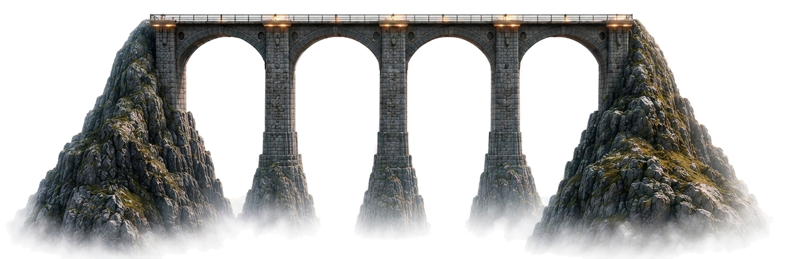
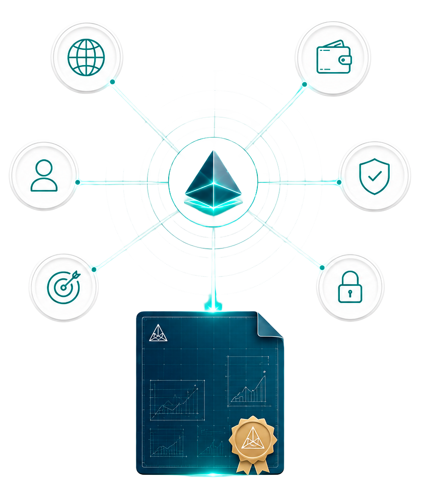
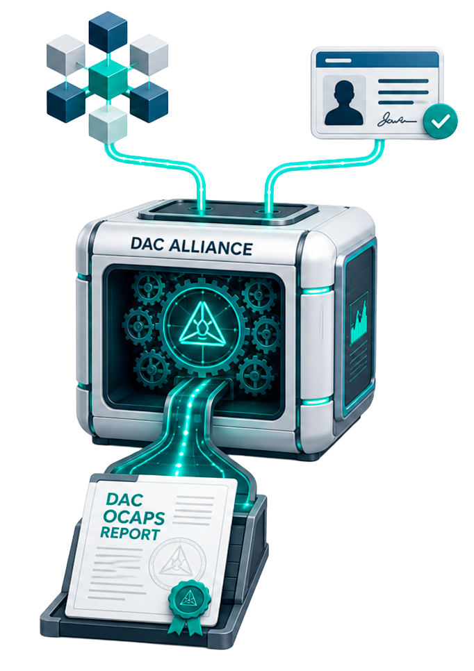
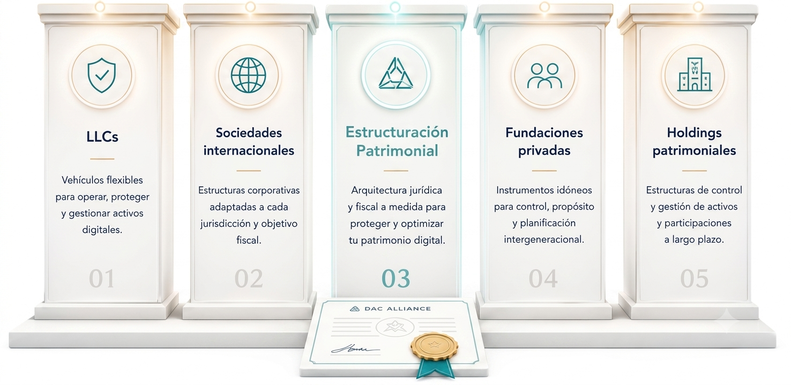
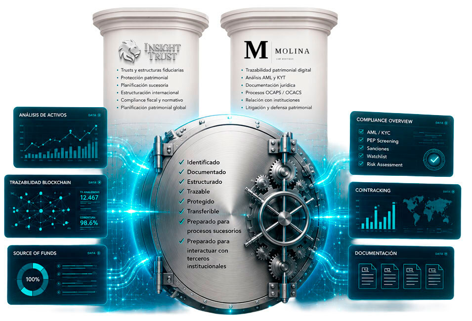

Primera generación
Comprar activos digitales
El foco estaba en adquirir activos digitales de alto potencial.
Metodología desarrollada conjuntamente por
Por qué existimos
El mercado de activos digitales ha madurado. Pero la mayoría de los holders aún no han logrado dar el salto de convertir sus activos digitales en un patrimonio digital transgeneracional, heredable, bien estructurado, eficiente fiscal y operativamente.
Primera generación
El foco estaba en adquirir activos digitales de alto potencial.
Segunda generación
El foco pasó a la seguridad: wallets, exchanges, backups y gestión de claves privadas.
Tercera generación
Hoy el desafío es estructurar, documentar y organizar para interactuar con el sistema bancario, TradFi y DeFi.
Nuestra metodología
Metodología propia que coordina disciplinas y procesos para construir un patrimonio preparado para interactuar con el ecosistema institucional.
Comprendemos tu patrimonio digital, tus objetivos y tu situación actual.
On-Chain Asset Patrimony Statement
Documentamos y verificamos tus activos digitales en la blockchain.
Diseñamos la arquitectura jurídica, fiscal y fiduciaria más adecuada para tu patrimonio y objetivos.
On-Chain Asset Compliance Statement
Preparamos la documentación y el cumplimiento normativo para interactuar con el ecosistema institucional.

Estructurado, documentado, protegido y preparado para interactuar con el sistema financiero e institucional.
Comprendemos tu patrimonio digital, tus objetivos y tu situación actual.
Documentamos y verificamos tus activos digitales en la blockchain.
Diseñamos la arquitectura jurídica, fiscal y fiduciaria más adecuada para tu patrimonio y objetivos.
Preparamos la documentación y el cumplimiento normativo para interactuar con el ecosistema institucional.
Estructurado, documentado, protegido y preparado para interactuar con el sistema financiero e institucional.
Paso 1 de la metodología
Todo patrimonio necesita un punto de partida.

Analizamos tu realidad patrimonial desde todas las dimensiones críticas para comprenderla en profundidad y definir una hoja de ruta coherente y efectiva.
Una hoja de ruta patrimonial coherente antes de implementar cualquier estructura.
Paso 2 de la metodología
On-Chain Asset Patrimony Statement
La primera representación documental verificable del patrimonio digital. OCAPS permite demostrar la existencia, composición y control efectivo del patrimonio digital, generando un informe robusto y verificable.
¿Existe el patrimonio digital y puede acreditarse documentalmente su control efectivo?
Verificamos, consolidamos y documentamos con rigor técnico y jurídico.

La primera fotografía patrimonial documentada del patrimonio digital.
Base sólida sobre la que se construirá toda la arquitectura jurídica, fiscal y patrimonial posterior.
Paso 3 de la metodología
Convertimos el patrimonio digital acreditado en patrimonio jurídicamente estructurado.
Diseñamos la arquitectura jurídica, fiscal y fiduciaria más adecuada para proteger, administrar y transmitir el patrimonio digital en cualquier jurisdicción.

Creamos estructuras jurídicas sólidas, reconocidas y adaptadas a los objetivos patrimoniales y familiares del cliente.
Paso 4 de la metodología
On-Chain Asset Compliance Statement
Cuando el patrimonio debe explicarse frente a terceros.
OCACS convierte la información on-chain en un informe de compliance comprensible, verificable y aceptable por bancos, custodios, reguladores e instituciones.
¿Puede acreditarse adecuadamente el origen, evolución y consistencia patrimonial de los activos digitales frente a terceros?
Traducimos la complejidad blockchain en confianza institucional.
Un informe que abre puertas y genera aceptación.
DAC Alliance
Unimos experiencia legal, fiscal y fiduciaria con tecnología y compliance blockchain para transformar activos digitales dispersos en patrimonio institucional.
El desafío ya no es adquirir activos digitales.
El desafío es transformarlos en patrimonio.
Del caos digital a estructuras que protegen, optimizan y perduran.

Hablemos
Una reunión estratégica de 30 minutos para entender tu situación patrimonial y ver si nuestra metodología encaja con tus objetivos.